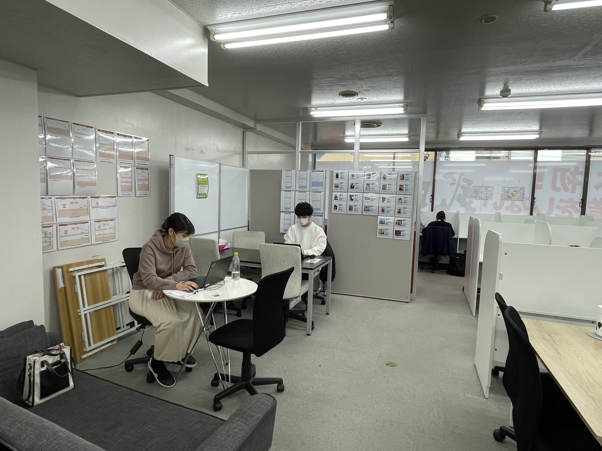
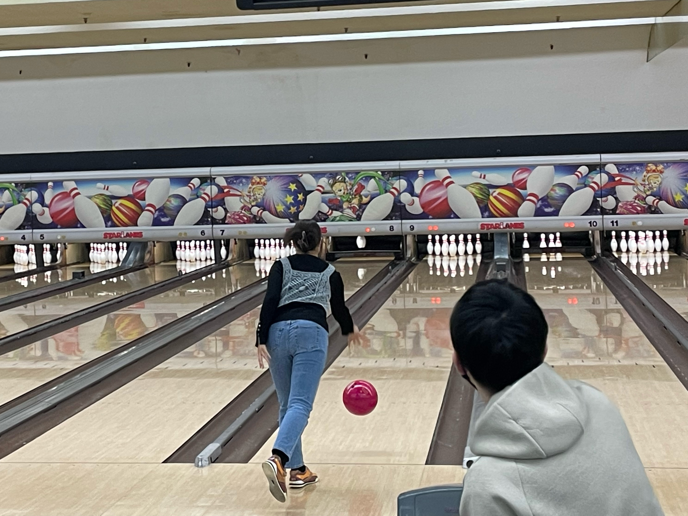
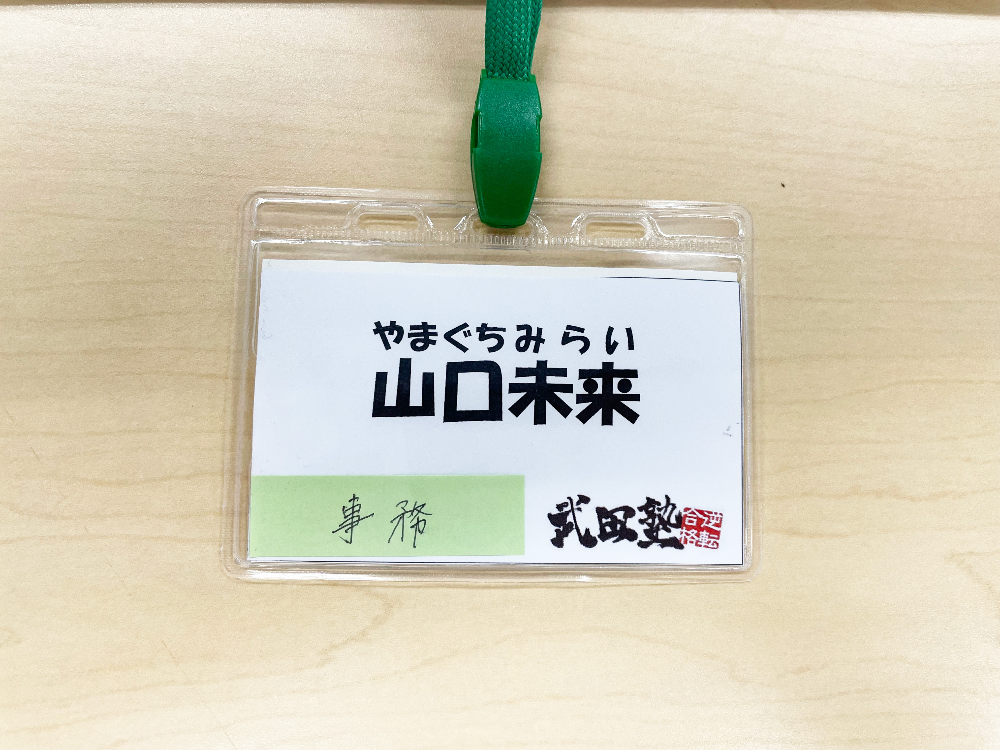

PROFILE
past students
櫻井翔太、國吉紗永、深田尚希、松村光、
常澄京花、
田中我空、宮本雄世、遠山愛咲、
須藤蒼乃、石井康介
subject
英語、国語、世界史
history
圧倒的な真面目さで事務に抜擢される。 中条さんからのslackは未読無視するが、山口さんからのslackはすぐに返信する 、という人が数多くいるとかいないとか。ワンピースは最近読み始めたらしい。
MESSAGE
中条太一
山口さん、ご卒業おめでとうございます！ ラスト1年間は事務として大変お世話になりました 山口さんがいてくれたおかげで、木更津校はスムーズに回りました！ 雑な振り方だったと思いますが、本当にありがとうございます！ さて、これからは社会人として責任を持って 頑張っていかないといけません。ぶっちゃけ重たいです。 山口さんは凄く真面目な方なので、休むときはしっかり休んで休憩を取ってください。 応援してます！
濱野聡子
山口さん、ご卒業おめでとうございます！ 1年間、一緒に事務のお仕事ができて楽しかったです。 いつも正確で、効率的な作業も提案してくださったりと、 とても心強く頼りにしていました。 そんな山口さんなので、就職してからも きっとご活躍されると確信しています！ お身体に気をつけて、お仕事以外の楽しみや目標も たくさん見つけて充実した社会人生活を♪♪ 1年間ありがとうございました！
池田翔慧
山口さん、ご卒業おめでとうございます！ 生徒の時からお世話になりました！ 講師と事務の両方もこなしていたのがシンプルにすごすぎると思っていました。 山口さんの持つ真面目さがあるからこそ、両方ともこなせていたんだと思います。 社会人になってもその真面目さで仕事をテキパキと こなしている姿がめちゃめちゃ想像できます。 これからも体調に気を付けて、無理せずにがんばってください！ ありがとうございました！！
植田佳和侑
ご卒業おめでとうございます！いつも優しい雰囲気で話してくださり嬉しかったです。Slackなどでビジネスマナーを守った文面を作るのがとても丁寧な上早くてすごいなとずっと思っていました。これからも頑張ってください！応援しています。
平野申大
山口さん、この度はご卒業おめでとうございます！ 過去問印刷を山口さんに頼んで、最近の話をするのが 浪人生活中のひとつの楽しみでした笑。 一方僕の方は春から理科大学に進学することになりました！ 山口さんは就職されると思うので、健康第一で頑張ってください！ 初任給でご飯連れてってくださーい！応援してます！ 1年間ありがとうございました！！！
佐藤優輝
先生のおかげで勉強が楽しくなり、成績も大きく伸ばすことができました。 今まで本当にお疲れ様でした。 これからも先生の教えを胸に、頑張って勉強していきます。 先生の次のステップが素晴らしいものになることを心から願っています。
宮本雄世
山口さん、ご卒業おめでとうございます！ 山口さんとの特訓は毎回毎回楽しい楽しい話をできました。 勉強や進路についてとても親身になってくれて相談しやすかったです。 最後の方は中々会えずに終わってしまったので、 直接報告できたりしなかったので残念だったけど、 山口さんのおかげで明治大学に無事進学できました。 今後もお体に気を付けて頑張って下さい！ 後、なんか美味しいお店でもあったら教えて欲しいです(笑)
櫻井翔太
お久しぶりです、覚えてますか？ 3年前に受験でお世話になった櫻井翔太です！ 入塾当初は、英語が全くわからない状況で、テストも英単語をほぼ覚えずに 受けていたこと大変申し訳ありませんでした。 ただ、山口さんの喝があったおかげで勉強に対するやる気が出て、 結果的に順天堂大学に合格することができました！ 約6ヶ月という非常に短い時間でしたが、僕にとってはとても濃い時間で、 その時を一緒に過ごした山口さんには大変感謝してます！ 塾を辞めてから全く関わりが無くなってしまいましたが、 何かの機会でまた会うことがありましたら、 その時はよろしくお願いします！約4年間、お疲れ様でした！！
GALLERY
- 
- 
- 